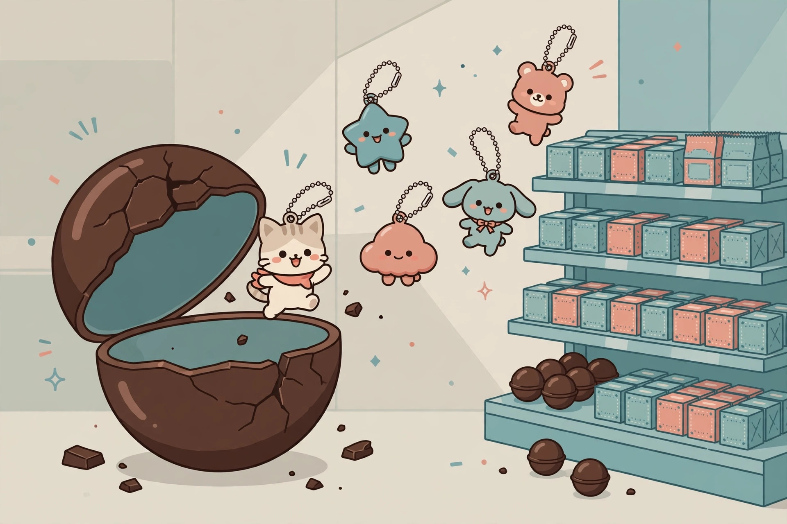

インフルエンサーの「あっすん」こと小栗彩朱佳容疑者が、無許可営業の風営法違反の疑いで逮捕された。反応の中心は事件そのものより、報道の見出しにある「人気インフルエンサー」という肩書きへのツッコミだ。
乳がん闘病の様子を発信し続けてきたミミポポさんが死去。追悼の声が広がっている。
バンダイ「サンリオキャラクターズ オーナメントチャーム＆チョコボーロ」が11月16日に発売（396円・全10種・ブラインド）。店頭での購入報告や交換の動きが一気に広がった。
新宿区長選で、新人・黒田あさひ氏が13,973票を獲得して次点に。「希望」を感じさせる候補者だった、という声が上がった。
発信や返信での姿勢、過去のテレビ出演時の振る舞いを疑問視する声が上がっている。
Threadsでは「いつもより朝早く出てコンビニ（セブン、ファミマ、ローソン）10店舗近くまわってもない」という買い回り報告。箱買い予約が届いた投稿では「全然揃わなかった」「6種類だよー」とダブり・偏りへの嘆き。発売日当日に「買えない」実況と「揃わない」嘆きが並ぶ。Instagramでは情報アカウント中心で、発売前から「11/16発売」「396円・全10種・シークレットあり」の告知カルーセルや開封リールが並ぶ。店頭では特価288円（税込317円）で並ぶ店舗も。同じくバンダイの「ちいかわ キャラマグネッツ5」「ホロライブ ウエハース」「たまごっちグミ30周年」など食玩の新商品が同時期に並ぶ。
「セザンヌの烏龍茶リップ06買って好きな色だし割といいなと思ってたけど07も気になっていた私、パーソナルカラー診断やったらブルベ冬だった、そりゃ07だわ」という、パーソナルカラー診断をきっかけにした追加購入の投稿。別に「すでに持ってたなんか嬉しい」という先行所有の喜びも。色番の迷い→診断→買い足し、という流れが見える。
サンリオ食玩の買い回り投稿
朝早くからコンビニ10店舗近く回って買えず。
発売日当日の「朝イチで回る」行動が習慣化しており、買えないこと自体をネタとして共有したい気持ち。
箱買いした人の投稿
箱買いでも6種類しか揃わず「投稿してる方々の見ても一番酷いのでは？」と自嘲。
ブラインドの偏りを「運の悪さ」として笑いに変え、同じ境遇の人の共感を誘いたい気持ち。
あっすんへの「誰だよ」投稿
「人気インフルエンサー、あっすんて誰だよ。人気？笑」というツッコミ。
メディアの「人気」という形容と自分の実感のズレへの違和感。「知らない＝人気じゃない」という素朴なツッコミ。
「みんな知りません」投稿
「ある意味で自己満な世界だし、何があったかも知らない、知ろうとも思わない」と表明。
インフルエンサー界隈の出来事を「自分の世界ではない」と線引きし、関心のなさを表明することで距離を取っている。
黒田あさひ本人の投稿
次点の結果に「大変悔しい結果でしたが、次に向け頑張ります！」と投稿。
敗北を認めつつ次への意志を示し、支持者を離さないための前向きな締め。
烏龍茶リップの買い足し投稿
パーソナルカラー診断でブルベ冬と分かり07を追加購入。
色番の迷いを診断という「根拠」で解消し、買い足しを正当化したい気持ち。
あっすんの逮捕報道をめぐり、「人気インフルエンサー」という肩書き自体への疑義が噴出。「殺人したとしても『たかが』って言いそう」といった擁護側への皮肉も見られ、擁護vs冷笑の構図。
「買えない」ことへの愚痴が目立ち、転売ではなく店頭の品薄とブラインドの偏りが不満の核。
あっすん＝冷笑・「誰？」のメタツッコミ、サンリオ食玩＝買い回り実況・開封の喜びと嘆き、黒田あさひ＝敗北を前向きに意味づける語り、ミミポポ＝追悼・感謝
サンリオ食玩はサンリオファン・食玩コレクター層（女性寄りの印象、情報アカウント中心）。あっすんは「知らない」側の一般層のツッコミが目立つ。黒田あさひは新宿区民・政治関心層。統計ではなく印象。
サンリオ食玩は「10店舗回っても買えない」「箱買いでも揃わない」という声が初日から出ており、ブラインド商品の「揃わなさ」は開封の楽しさと表裏一体だが、発売日当日の買い回り実況が「買えない」体験として拡散すると、買い逃した層の熱が冷めやすい。公式・店舗側が入荷情報や交換の場（公式の交換呼びかけなど）を早めに示すと、「買えない」が「探す楽しみ」に変わりやすい。あっすんの「誰？」ツッコミは、メディアの「人気インフルエンサー」という肩書きが実感とズレると、報道そのものへの不信に跳ね返る例。肩書きの根拠（フォロワー数や活動領域）を一言添えるだけでも温度が下がりそう。
示唆 1. サンリオ食玩は発売日当日に「買えない・揃わない」実況がトレンド化しており、ブラインド商品の「揃わなさ」は開封の楽しさと同時に不満の種でもある。入荷情報や交換の場を早めに示すことが、「買えない」体験を「探す楽しみ」に変える接点になりやすい。
示唆 2. 烏龍茶リップはパーソナルカラー診断と結びついて「色番の迷い→診断→買い足し」というリピートの流れが生まれている。診断や肌色別の選び方ガイドは、迷いの解消と追加購入の両方に効く接点。
示唆 3. 「人気インフルエンサー」という肩書きが実感とズレると、報道内容そのものより肩書きへのツッコミが主反応になる。知名度の前提が共有されていない相手には、肩書きの根拠を一言添えるだけでも受け止め方が変わりやすい。